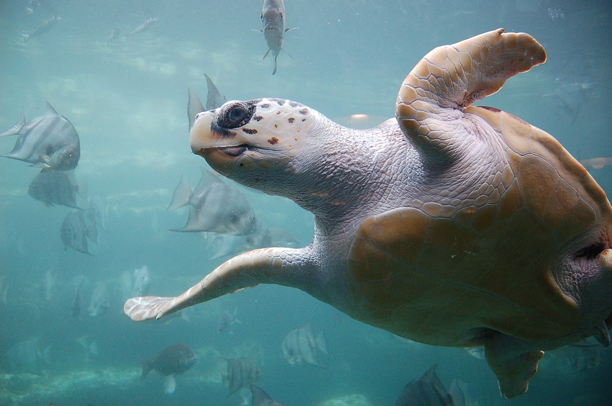
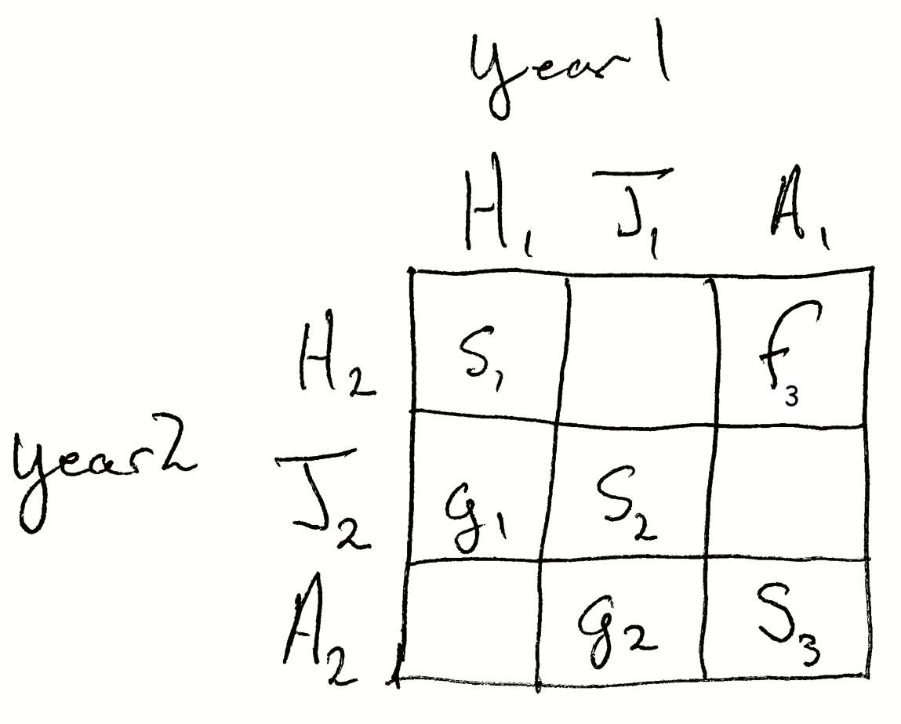

getwd()[1] "/Users/stevenmh/Courses/intro_to_ecology"
In this chapter, you’ll connect sea turtle natural history to a demographic model of population growth and learn how we all learned about how to help sea turtles. Along the way, you’ll learn about sea turtle natural history, demography, dynamics and model sensitivity.
If you successfully complete this chapter, you will
Deomgraphy includes the structure of a population which is the relative numbers of individuals of different ages or stages. Deomgraphy also includes the rates that control that structure which are primarily age- and stage-specific birth rates, death rates, and survival. We use this detailed information to make informed predictions about the population’s future state, including its overall size and its structure. Therefore, demography also includes the overall rates, including population growth, that emerge from all the detailed age/stage-specific information. The study of human demography helps nations make informed policy decisions that take into account how societies will change over time due to populations that are growing, shrinking, aging or getting younger on average (Lee 2011). The study of many rare, threatened or vulnerable species includes demography because demography helps us understand and manage populations (Caswell 2001).
The loggerhead sea turtle (Caretta caretta) is a widely distributed (i.e. cosmopolitan) species that lives in oceans around the world. The International Union for Conservation of Nature (IUCN, https://www.iucnredlist.org/) lists it as “vulnerable” to extinction, which, sadly, is pretty good these days. The fact that the species is not worse off is in part due to research like that of Crouse, Crowder, and Caswell (1987). This research by Deborah Crouse, Hal Caswell, and many others is the subject of what you will work with in this assignment.
Sea turtles live in warm oceans around the world and reproduce on sandy beaches. Females return to the same beaches most years to lay eggs in clutches. They come ashore, dig a hole in the sand, lay 10-100 eggs, and cover the nest, often disguising it from terrestrial predators who would like to dig them up to eat them. The female then returns to the sea to feed and ovoid enemies. If the everything goes right, the eggs hatch after incubation, hatchlings emerge together, struggle to the surf, and attempt to avoid the many predators (e.g., gulls, raccoons, crabs, people). Sea turtle hatchlings face many threats, including from humans who eat the eggs, and trucks or off-road vehicles can destroy the nests. In addition, lighting from nearby streets and homes can confuse hatchlings as they may crawl toward the lights as opposed to heading out to sea.
Include answers to these in Deliverables. 1. Consult Table 3 (Crouse et al. 1987). a. Which two stages have the lowest annual survivorship? a. Which stages have the highest annual survivorship? 1. Why do you suppose that 1st year remigrants have such low fecundity?
Fishing trawlers, which drag nets for long distances to catch shrimp and fish create another source of mortality in juveniles and adults. The sea turtles get caught in these nets and drown. These dead turtles are referred to as “by-catch”, that is, animals killed unintentionally while fishing for other species.
Sea turtle populations have been on the decline for well over a century, and some species are more endangered than others. One common conservation strategy has been to protect the eggs and hatchlings. More recently, some countries have passed laws requiring fishing trawlers (fishing boats dragging huge nets for hours at a time) to use turtle excluders devices (TEDs). These spring-loaded devices fit at the end of a trawler net and will open up when they receive a big bump from a heavy sea turtle. This allows the turtle to escape, and the fishermen lose only a fraction of their catch.
No one really knew the value of TEDs until Deborah Crouse and others modeled sea turtle populations and showed clearly that (1) saving eggs and hatchlings was not enough, and (2) increasing survival of large turtles (large juveniles and adults) was required to save the turtles from continued declines and extinction.
We use a square matrix to summarize a species’ age- or stage-specific demographic rates. A matrix is mathematical array of numbers with specified rows and columns. The dimension of a matrix is its number of rows and number of columns. A matrix with the same number rows as columns is called a square matrix.
The effect of a matrix element on long term asymptotic growth rate (lambda) is known as sensitivity or elasticity, depending on the details of the calculations. There are abstract ways to calculate those using linear algebra, but here we do it the easy and transparent way. We will change annual survivals of particular stages, and then recalculate lambda and r to examine the effect directly.
Crouse, Crowder, and Caswell (1987) performed a demographic analysis of an endangered sea turtle species, the loggerhead (Caretta caretta). Management of loggerhead populations seemed essential for their long term survival, and a popular management strategy had been and still is to protect nesting females, eggs, and hatchlings. The ground breaking work by Crouse1 and her colleagues compiled data to create a stage-based projection matrix to analyze quantitatively which stages are most important and least important in influencing long-term growth rate. This work led to US Federal laws requiring that US shrimp fishermen use nets that include Turtle Excluder Devices (TEDs).
A demographic transition matrix is merely a compact quantitative summary of a species’ life history events. It includes the annual probabilities that an individual remains in a particular stage, grows into a later stage, or even regresses back to an “earlier” stage. It also includes the fertility or number of progeny it contributes to the first stage. These stages may be age classes (e.g., 0-5 y), sizes (e.g., 2-4 leaves), or some other major life history stage (e.g., first year breeder).
The transition matrix holds each of the probabilities and fertilities in a way that the column identifies the stage at time \(t\) whereas the row identifies the next time period \(t+1\).

In Figure 7.2, the element \(s_2\) is the probability that a juvenile in year 1 survives to remain a juvenile in year 2. The element \(g_2\) represents the probability that a juvenile in year 2 survives and also become a reproductively mature adult in year 2. The element \(g_1\) is the probability that a hatchling survives and becomes a juvenile in year 2. The element \(s_3\) is the probability that an adult survives and remains an adult. We refer to the elements on the diagonal (\(s\)) as stasis and the elements on the off-diagonal (\(g\)) as growth.
Fecundity or reproduction is seen as adults contributing the to smallest or youngest stage. The element \(f_3\) is the number of hatchlings that occur in year 2 based on the survival and reproduction of the average adult. The element \(s_1\) is the survival of hatchlings. If the stage only exists for one year, then \(s_1=0\) because, by definition, after one year a hatching is a juvenile, or it is dead.
Crouse, Crowder, and Caswell (1987) gathered data from a variety of sources to estimate loggerhead turtle survival and fertility at different ages and stages. They organized these data in the form of a transition matrix, A. They then used this model to evaluate the relative importance of different stage transitions to the population gorwth rate.
On the basis of their analysis, they were able to identify that the survival of juveniles and subadults was the most important determinant of turtle growth rate, under the current circumstances. It was this insight, made possible only because of astructure population model, that led to changes in laws to require the use of turtle excluder devices (TEDs) in fishing and shrimpo trawlers.
In this assignment, you will walk through the types of analyses done by Deborah Crouse and her colleagues. They combed the literature to find information about survival and reproduction by loggerheads and summarized those findings in their tables 1 and 2. They then organized that information into a more con densed form and presented it in Table 3, shown here in Figure 7.3.

Their transition matrix (Table 4):
\[\begin{array}{c} \\H\\J_s\\J_l \\sub \\ B_1 \\B_2 \\ M \end{array} \left( \begin{array}{cccccccc} H&J_s & J_l & sub & B_1 & B_2 & M\\ 0& 0& 0& 0& 127& 4& 80\\ 0.6747& 0.7370& 0& 0& 0& 0& 0\\ 0& 0.0486& 0.6610& 0& 0& 0& 0\\ 0& 0& 0.0147& 0.6907& 0& 0& 0\\ 0& 0& 0& 0.0518& 0& 0& 0\\ 0& 0& 0& 0& 0.8091& 0& 0\\ 0& 0& 0& 0& 0& 0.8091& 0.8089 \end{array} \right)\]
To use the information in Table 3 to make predictions about the long-term viability of the population and to make recommendations for the conservation of the population, Crouse and colleagues need to combine these stage-specific demographic rates into a model, and summarize the behavior of that model.
Their first step was to put the above rates into a demographic transition matrix, where columns represent stages in one year, and the rows represent stages in the next year.
As with all of our work, confirm you are in the correct working directory.
getwd()[1] "/Users/stevenmh/Courses/intro_to_ecology"Fix this, if necessary.
Load needed packages.
## for graphics and data manipulation
library(tidyverse)── Attaching core tidyverse packages ──────────────────────── tidyverse 2.0.0 ──
✔ dplyr 1.1.4 ✔ readr 2.1.5
✔ forcats 1.0.0 ✔ stringr 1.5.1
✔ ggplot2 3.4.4 ✔ tibble 3.2.1
✔ lubridate 1.9.3 ✔ tidyr 1.3.1
✔ purrr 1.0.2
── Conflicts ────────────────────────────────────────── tidyverse_conflicts() ──
✖ dplyr::filter() masks stats::filter()
✖ dplyr::lag() masks stats::lag()
ℹ Use the conflicted package (<http://conflicted.r-lib.org/>) to force all conflicts to become errorsTwo of the techniques we use to analyze a demographic matrix are simulation, and a mathematical technique called eigenanalysis. Simulation allows us to reveal the dynamics through time, year after year, generation after generation. Eigenanalysis allows us to very quickly quantify average characteristics of the population, including the population growth rate, \(\lambda\), the stable stage distribution, and the elasticities.
We will focus on lambda, and do some experiments playing around with survival and growth.
First, we need to create the observed transition matrix.
A <- matrix(
c(0, 0, 0, 0, 127, 4, 80,
0.6747, 0.7370, 0, 0, 0, 0, 0,
0, 0.0486, 0.6610, 0, 0, 0, 0,
0, 0, 0.0147, 0.6907, 0, 0, 0,
0, 0, 0, 0.0518, 0, 0, 0,
0, 0, 0, 0, 0.8091, 0, 0,
0, 0, 0, 0, 0, 0.8091, 0.8089),
nrow=7, ncol=7, byrow=TRUE)
rownames(A) <- colnames(A) <- c("H","J_s","J_l", "sub", "B_1", "B_2", "M")
A H J_s J_l sub B_1 B_2 M
H 0.0000 0.0000 0.0000 0.0000 127.0000 4.0000 80.0000
J_s 0.6747 0.7370 0.0000 0.0000 0.0000 0.0000 0.0000
J_l 0.0000 0.0486 0.6610 0.0000 0.0000 0.0000 0.0000
sub 0.0000 0.0000 0.0147 0.6907 0.0000 0.0000 0.0000
B_1 0.0000 0.0000 0.0000 0.0518 0.0000 0.0000 0.0000
B_2 0.0000 0.0000 0.0000 0.0000 0.8091 0.0000 0.0000
M 0.0000 0.0000 0.0000 0.0000 0.0000 0.8091 0.8089Then we can calculate lambda. Remember that lambda is just the ratio of population sizes in sequential years (\(\lambda=N_{t+1}/N_{t}\)).
original_lambda <- Re( eigen(A)$values[1] )
original_lambda[1] 0.945031This value, \(\lambda = 0.94\), is less than \(\lambda=1\), and therefore indicates a shrinking population. This shows that the loggerhead sea turtle was predicted to decline.
What can we do?
Part of managing rare species is figuring out which part of the population, the age, or the stage on which to concentrate your efforts.
A good way to figure out where to focus our effort is to find out which stage could make the biggest difference to the growth rate, \(\lambda\). If we improve survival of an stage and it helps \(\lambda\) increase above 1, focusing on that stage could be a good strategy.
Your strategy will be to improve the survival in each stage so that individuals in that stage do not die. They either survive and remain in that stage, or they grow into the next stage. That means that with perfect survival, stasis and growth sum to nearly one.
For each stage, we will pretend that we can improve annual survivale 99.9%. Some of our stages are only one year in duration, while others are 7, 8, or 30 years in duration. This makes it a little tricky to calculate our new simulated matrix elements. I will do that part for you.
In each of seven simulations, you will test the effect on growth rate (\(\lambda\)) of improved survival.
For your first experiment, you will test the effect on lambda of improving survival and growth of eggs and hatchlings to 99.9%, or annual survivorship of 0.999. Here are the steps:
## new matrix
A1 <- A
## Change just the hatchling survival/growth
A1[2,1] <- 0.999
## look at the new matrix
A1 H J_s J_l sub B_1 B_2 M
H 0.000 0.0000 0.0000 0.0000 127.0000 4.0000 80.0000
J_s 0.999 0.7370 0.0000 0.0000 0.0000 0.0000 0.0000
J_l 0.000 0.0486 0.6610 0.0000 0.0000 0.0000 0.0000
sub 0.000 0.0000 0.0147 0.6907 0.0000 0.0000 0.0000
B_1 0.000 0.0000 0.0000 0.0518 0.0000 0.0000 0.0000
B_2 0.000 0.0000 0.0000 0.0000 0.8091 0.0000 0.0000
M 0.000 0.0000 0.0000 0.0000 0.0000 0.8091 0.8089In our new matrix, we see that 99.9% of hatchlings (first column, H) survive to grow into being small juveniles that next year (second row, J_s), that is, \(a_{2,1} = 0.999\).
Now calculate lambda of the new matrix.
## using Re() extracts just the real part of the eigenvalue, and not the imaginary part
Re( eigen(A1)$values[1] )[1] 0.964903This is the new growth rate. Is it greater than 1? Does it suggest that improving hatchling survival will allow this turtle population to grow? How does this compare to the original value of lambda of 0.94? That is, how much did saving all the hatchlings help the loggerhead population? You’ll need this for deliverables.
Here you will test the effect on lambda of improving survival and growth of small juveniles to 99.9%, or annual survivorship of 0.999. This stage lasts seven years, and so I calculated the new matrix elements for you (see the code).
Here are the steps:
## new matrix with NEW NAME, A2
## make sure you start with the ORIGINAL matrix A
A2 <- A
## Change just the stasis and growth for small juveniles
A2[2,2] <- 0.857 # stasis
A2[3,2] <- 0.142 # growth
A2 H J_s J_l sub B_1 B_2 M
H 0.0000 0.000 0.0000 0.0000 127.0000 4.0000 80.0000
J_s 0.6747 0.857 0.0000 0.0000 0.0000 0.0000 0.0000
J_l 0.0000 0.142 0.6610 0.0000 0.0000 0.0000 0.0000
sub 0.0000 0.000 0.0147 0.6907 0.0000 0.0000 0.0000
B_1 0.0000 0.000 0.0000 0.0518 0.0000 0.0000 0.0000
B_2 0.0000 0.000 0.0000 0.0000 0.8091 0.0000 0.0000
M 0.0000 0.000 0.0000 0.0000 0.0000 0.8091 0.8089Now that you have a new matrix, calculate the lambda for this matrix. Do that now by borrowing and editing code from above.
Now calculate the finite rate of increase (\(\lambda\))
Re( eigen(A2)$values[1] )[1] 1.03806What does this value of lambda tell you about the effect of increasing survival of small juveniles (if we could do that)?
Repeat a similar procedure for each stage, using these values:
| Stage | Stasis | Growth |
|---|---|---|
| H | 0.000 | 0.999 |
| J_s | 0.857 | 0.142 |
| J_l | 0.875 | 0.124 |
| sub | 0.833 | 0.166 |
| B_1 | 0.000 | 0.999 |
| B_2 | 0.000 | 0.999 |
| M | 0.966 | 0.000 |
Record the new value of lambda for each separate simulation.
Put the following into a single document:
Upload this document and your R script to the appropriate site.
Crouse was a graduate student at the time—graduate students are the life-blood of modern science, doing cutting edge work and pushing their fields forward.↩︎